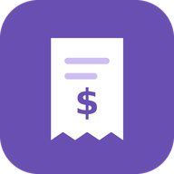

Daily Spend
Keep track of what you spend each day.
It's free, needs no account, and works without an internet connection once installed. Everything you enter stays on your phone. Nobody else can see it, including the person who sent you this link.
Open Daily SpendInstall it on your iPhone
About 30 seconds. Afterwards it has its own icon and opens full screen like any other app.
- Open this page in Safari. Other browsers on iPhone can't install apps.
- Tap Open Daily Spend above.
- Tap the Share button at the bottom of the screen.
- Scroll down, tap Add to Home Screen, then tap Add.
- Open Daily Spend from your home screen.
https://bfirst786.github.io/daily-spend/
Using it
- Set your daily budget under Settings, at the bottom. The bar at the top turns yellow when you're close and red when you're over.
- Add a purchase: type the amount (the decimal point stays put, so 1-2-5-0 is $12.50), pick a category, add a note if you want, and tap Add.
- Say it: tap Say it and say something like "12.50 lunch at Chipotle". If it doesn't listen right away, tap the box and use the microphone on your keyboard.
- Quick log: tap Quick log for a big full-screen keypad, good for adding several purchases in a row. Tap Done or swipe back to return.
- Fix a purchase: tap it to change the amount, category, note, date or time.
- Archive (box icon) keeps a purchase but leaves it out of your totals, for returns or things you got paid back for. Delete (trash icon) removes it for good.
- Other days: use the arrows at the top, tap a bar in the 14-day chart, or tap Show earlier days under Purchases.
Keep a backup
Your purchases live only on this phone, inside the app. They're deleted if you delete the app, clear Safari's website data, or lose the phone.
- Under Backup, tap Save backup every so often and keep the file somewhere safe: Files, iCloud Drive, Google Drive, or email it to yourself. To save it to Google Drive, tap Google Drive in the share sheet that opens (you need the Google Drive app), or choose Save to Files and pick Google Drive there.
- To move to a new phone, install the app there, tap Restore backup and pick that file.
Questions
- Do I need to update it?
- No. When you open it with an internet connection, you get the latest version automatically.
- Does it cost anything or show ads?
- No.
- Is my data sent anywhere?
- No. The app has no server and no account. The only copy is on your phone, plus any backups you save.